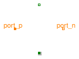

Please have a look at UsersGuide.ReluctanceForceCalculation for an explanation of the different flux tube categories and resulting sub-packages.
Flux tube elements with generation of a reluctance force are intended for modelling of position-dependent air gap sections and permanent magnet sections respectively of translatory actuators. By default, the position co-ordinate of the mechanical connector flange.s is identical with the dimension l of the package's flux tube elements. l is the dimension changes with armature motion. If needed, the identity l=flange.s can be replaced by an actuator-specific equation, for example, when a flux tube length increases with decreasing armature position. The position co-ordinate of an element's translatory connector flange.s in turn will be identical with the armature position x in most cases, as the examples illustrate.The derivative of each element's permeance with respect to armature position dGmBydx is calculated from the derivative of the flux tube's permeance with respect to its varying dimension dGmBydl and the derivative of this dimension with respect to armature position dlBydx:
dG_m dG_m dl
---- = ---- * --
dx dl dx
The parameter dlBydx must be set in each flux tube element to +1 or -1 according to the definition of the armature co-ordinate and the position of the element in a device's magnetic circuit. Proper match between armature motion and resulting variation of the flux tube length assures that the element's reluctance force acts in the right direction.
The shapes of the flux tubes defined in this package are rather simple. Only one dimenion varies with armature motion. Flux tubes with more complex variations of dimensions with armature motion can be defined by extending the base class Interfaces.PartialForce, if needed. Determination of the analytic derivative dGmBydl could become more complex for those flux tubes.
| Name | Description |
|---|---|
| (Hollow) cylinder with axial flux; constant permeability | |
| Hollow cylinder with radial flux; constant permeability | |
| Cuboid with flux in direction of motion, e.g. air gap with rectangular cross-section; constant permeability | |
| Cuboid with flux orthogonal to direction of motion; constant permeability | |
| Leakage flux tube around cylindrical or prismatic poles |

Please refer to the enclosing sub-package Force for a description of all elements of this package and to [Ro41] for derivation and/or coefficients of the equation for permeance G_m.
Extends from Modelica.Magnetic.FluxTubes.Interfaces.PartialForce (Base class for flux tubes with reluctance force generation; constant permeability).
| Type | Name | Default | Description |
|---|---|---|---|
| Boolean | useSupport | false | = true, if support flange enabled, otherwise implicitly grounded |
| RelativePermeability | mu_r | 1 | Relative magnetic permeability [1] |
| Integer | dlBydx | 1 | Derivative of flux tube's varying dimension with respect to armature position; set to +1 or -1 |
| Radius | r_i | Inner radius of (hollow) cylinder [m] | |
| Radius | r_o | Outer radius of (hollow) cylinder [m] | |
| Variable geometry | |||
| Length | l | s | Axial length (in direction of flux) [m] |
 | |||
| Type | Name | Description |
|---|---|---|
| PositiveMagneticPort | port_p | Positive magnetic port |
| NegativeMagneticPort | port_n | Negative magnetic port |
| Flange_b | flange | Generated reluctance force at armature position |
| Support | support | Support/housing of component |
model HollowCylinderAxialFlux
"(Hollow) cylinder with axial flux; constant permeability"
extends Modelica.Magnetic.FluxTubes.Interfaces.PartialForce;
SI.Length l = s "Axial length (in direction of flux)";
parameter SI.Radius r_i( start = 0) "Inner radius of (hollow) cylinder";
parameter SI.Radius r_o( start = 0.01) "Outer radius of (hollow) cylinder";
SI.MagneticFluxDensity B "Homogeneous flux density";
protected
parameter SI.Area A = pi*(r_o^2 - r_i^2)
"Cross-sectional area orthogonal to direction of flux";
equation
G_m = mu_0*mu_r * A /l;
dGmBydx = -1 * mu_0*mu_r * A /l^2 * dlBydx;
B = Phi/A;
end HollowCylinderAxialFlux;
Please refer to the enclosing sub-package Force for a description of all elements of this package and to [Ro41] for derivation and/or coefficients of the equation for permeance G_m.
Extends from Modelica.Magnetic.FluxTubes.Interfaces.PartialForce (Base class for flux tubes with reluctance force generation; constant permeability).
| Type | Name | Default | Description |
|---|---|---|---|
| Boolean | useSupport | false | = true, if support flange enabled, otherwise implicitly grounded |
| RelativePermeability | mu_r | 1 | Relative magnetic permeability [1] |
| Integer | dlBydx | 1 | Derivative of flux tube's varying dimension with respect to armature position; set to +1 or -1 |
| Radius | r_i | Inner radius of hollow cylinder [m] | |
| Radius | r_o | Outer radius of hollow cylinder [m] | |
| Variable geometry | |||
| Length | l | s | Axial length (orthogonal to direction of flux) [m] |
 | |||
| Type | Name | Description |
|---|---|---|
| PositiveMagneticPort | port_p | Positive magnetic port |
| NegativeMagneticPort | port_n | Negative magnetic port |
| Flange_b | flange | Generated reluctance force at armature position |
| Support | support | Support/housing of component |
model HollowCylinderRadialFlux
"Hollow cylinder with radial flux; constant permeability"
extends Modelica.Magnetic.FluxTubes.Interfaces.PartialForce;
SI.Length l = s "Axial length (orthogonal to direction of flux)";
parameter SI.Radius r_i( start = 0.01) "Inner radius of hollow cylinder";
parameter SI.Radius r_o( start = 0.015) "Outer radius of hollow cylinder";
SI.MagneticFluxDensity B_avg
"Average flux density (at arithmetic mean radius)";
protected
SI.Area A_avg
"Average cross-sectional area orthogonal to direction of flux (at arithmetic mean radius)";
equation
G_m = mu_0*mu_r * 2 * pi * l /Modelica.Math.log(r_o/r_i);
dGmBydx = mu_0*mu_r * 2 * pi/Modelica.Math.log(r_o/r_i) * dlBydx;
A_avg = pi*(r_i + r_o) * l;
B_avg = Phi/A_avg;
end HollowCylinderRadialFlux;
Please refer to the enclosing sub-package Force for a description of all elements of this package and to [Ro41] for derivation and/or coefficients of the equation for permeance G_m.
Extends from Modelica.Magnetic.FluxTubes.Interfaces.PartialForce (Base class for flux tubes with reluctance force generation; constant permeability).
| Type | Name | Default | Description |
|---|---|---|---|
| Boolean | useSupport | false | = true, if support flange enabled, otherwise implicitly grounded |
| RelativePermeability | mu_r | 1 | Relative magnetic permeability [1] |
| Integer | dlBydx | 1 | Derivative of flux tube's varying dimension with respect to armature position; set to +1 or -1 |
| Length | a | Width of rectangular cross-section [m] | |
| Length | b | Height of rectangular cross-section [m] | |
| Variable geometry | |||
| Length | l | s | Axial length (in direction of flux) [m] |
 | |||
| Type | Name | Description |
|---|---|---|
| PositiveMagneticPort | port_p | Positive magnetic port |
| NegativeMagneticPort | port_n | Negative magnetic port |
| Flange_b | flange | Generated reluctance force at armature position |
| Support | support | Support/housing of component |
model CuboidParallelFlux
"Cuboid with flux in direction of motion, e.g. air gap with rectangular cross-section; constant permeability"
extends Modelica.Magnetic.FluxTubes.Interfaces.PartialForce;
SI.Length l = s "Axial length (in direction of flux)";
parameter SI.Length a( start = 0.01) "Width of rectangular cross-section";
parameter SI.Length b( start = 0.01) "Height of rectangular cross-section";
SI.MagneticFluxDensity B "Homogeneous flux density";
protected
parameter SI.Area A = a*b
"Cross-sectional area orthogonal to direction of flux";
equation
G_m = mu_0*mu_r * A /l;
dGmBydx = -1 * mu_0*mu_r * A /l^2 * dlBydx;
B = Phi/A;
end CuboidParallelFlux;
Please refer to the enclosing sub-package Force for a description of all elements of this package and to [Ro41] for derivation and/or coefficients of the equation for permeance G_m.
Extends from Modelica.Magnetic.FluxTubes.Interfaces.PartialForce (Base class for flux tubes with reluctance force generation; constant permeability).
| Type | Name | Default | Description |
|---|---|---|---|
| Boolean | useSupport | false | = true, if support flange enabled, otherwise implicitly grounded |
| RelativePermeability | mu_r | 1 | Relative magnetic permeability [1] |
| Integer | dlBydx | 1 | Derivative of flux tube's varying dimension with respect to armature position; set to +1 or -1 |
| Length | a | Width of rectangular cross-section [m] | |
| Length | b | Height of rectangular cross-section (in flux direction) [m] | |
| Variable geometry | |||
| Length | l | s | Length in direction of motion (orthogonal to flux) [m] |
 | |||
| Type | Name | Description |
|---|---|---|
| PositiveMagneticPort | port_p | Positive magnetic port |
| NegativeMagneticPort | port_n | Negative magnetic port |
| Flange_b | flange | Generated reluctance force at armature position |
| Support | support | Support/housing of component |
model CuboidOrthogonalFlux
"Cuboid with flux orthogonal to direction of motion; constant permeability"
extends Modelica.Magnetic.FluxTubes.Interfaces.PartialForce;
SI.Length l = s "Length in direction of motion (orthogonal to flux)";
parameter SI.Length a( start = 0.01) "Width of rectangular cross-section";
parameter SI.Length b( start = 0.01)
"Height of rectangular cross-section (in flux direction)";
SI.MagneticFluxDensity B "Homogeneous flux density";
protected
SI.Area A "Cross-sectional area orthogonal to direction of flux";
equation
A = a*l;
G_m = mu_0*mu_r * A /b;
dGmBydx = mu_0*mu_r * a /b * dlBydx;
B = Phi/A;
end CuboidOrthogonalFlux;
Please refer to the description of the enclosing sub-package Force for a description of all elements of this package.
Leakage flux around a prismatic or cylindric air gap between to poles can be described with this model. Due to its constant radius of the leakage field r, the model is rather simple. Whereas in reality the leakage radius is approximately constant for air gap lengths l greater than this radius, it decreases with air gap lengths less than the leakage radius. This decrease for small air gaps is neglected here, since the influence of the leakage flux tube compared to that of the enclosed main air gap (connected in parallel) decreases for decreasing air gap length l.
Note that in [Ka08] the equation for G_m is accidentally swapped with that of a similar element.
Extends from Modelica.Magnetic.FluxTubes.Interfaces.PartialForce (Base class for flux tubes with reluctance force generation; constant permeability).
| Type | Name | Default | Description |
|---|---|---|---|
| Boolean | useSupport | false | = true, if support flange enabled, otherwise implicitly grounded |
| RelativePermeability | mu_r | 1 | Relative magnetic permeability [1] |
| Integer | dlBydx | 1 | Derivative of flux tube's varying dimension with respect to armature position; set to +1 or -1 |
| Length | w | Width orthogonal to flux; mean circumference of flux tube in case of cylindrical poles [m] | |
| Radius | r | Radius of leakage field [m] | |
| Variable geometry | |||
| Length | l | s | Axial length (in direction of flux) [m] |
 | |||
| Type | Name | Description |
|---|---|---|
| PositiveMagneticPort | port_p | Positive magnetic port |
| NegativeMagneticPort | port_n | Negative magnetic port |
| Flange_b | flange | Generated reluctance force at armature position |
| Support | support | Support/housing of component |
model LeakageAroundPoles
"Leakage flux tube around cylindrical or prismatic poles"
extends Modelica.Magnetic.FluxTubes.Interfaces.PartialForce;
SI.Length l = s "Axial length (in direction of flux)";
parameter SI.Length w( start = 0.1)
"Width orthogonal to flux; mean circumference of flux tube in case of cylindrical poles";
parameter SI.Radius r( start = 0.01) "Radius of leakage field";
equation
//adapted from [Ka08], but corrected
//(in [Ka08] equation accidentally swapped with that of a similar element)
G_m = mu_0 * w /pi * Modelica.Math.log(1 + pi * r/l);
//derivative at full length:
// dGmBydx = mu_0 * w /pi * 1/(1 + pi * r/l) * (-1)*pi*r/l^2 * dlBydx;
//simplified:
dGmBydx = - mu_0 * w * r * dlBydx / (l^2 *(1 + pi * r/l));
end LeakageAroundPoles;